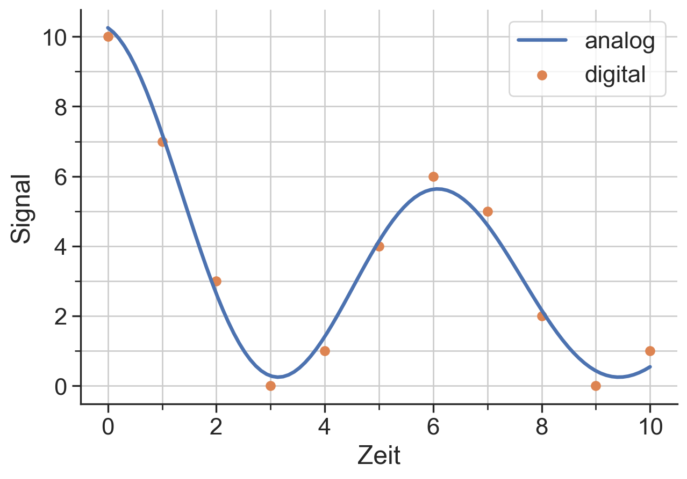
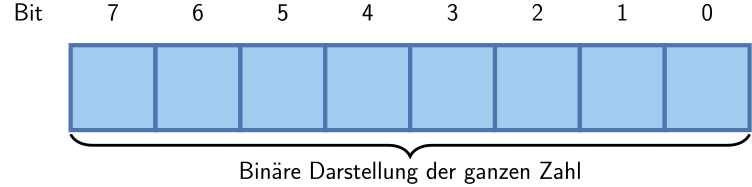
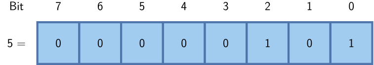
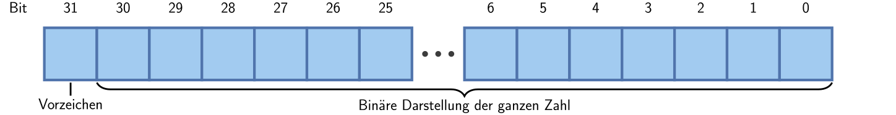
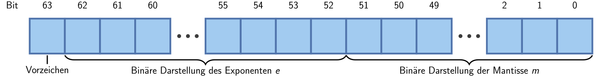

32 Exkurs: Interne Darstellung von Zahlen und Zeichen
Die Grundlage für alle modernen Computer ist die Digitalisierung. Diese ermöglicht es reale Informationen, Kommunikationsformen oder Anweisungen als eine Folge von zwei Zuständen 1/0 darzustellen. Computersysteme nutzen diese Reduktion bzw. Vereinfachung auf nur zwei Zustände zum Speichern, Übertragen und Verarbeiten von Daten.
32.1 Analoge und digitale Signale
In der Technik unterscheidet man grundsätzlich zwischen analogen und digitalen Signalen, wenn Informationen dargestellt, verarbeitet oder übertragen werden.
32.1.1 Analoge Signale
Ein analoges Signal ist kontinuierlich in Zeit und Ausprägung. Es kann unendlich viele Werte innerhalb eines Bereichs annehmen – wie z. B. die Spannung eines Mikrofonsignals, die mit der Lautstärke variiert, oder die Temperatur, die sich stetig verändert.
Analoge Signale sind gut geeignet, um natürliche Phänomene direkt abzubilden, sind aber anfällig für Störungen und schwer exakt zu speichern oder weiterzuverarbeiten.
32.1.2 Digitale Signale
Ein digitales Signal besteht aus diskreten Werten – meist zwei: 0 und 1. Es wird also in einzelnen Schritten dargestellt und ist damit für Computer besonders gut geeignet. Die kontinuierlichen Werte der realen Welt müssen dafür zunächst in digitale Werte umgewandelt werden (Analog-Digital-Wandlung).
Digitale Signale lassen sich fehlerfrei speichern, übertragen und beliebig oft kopieren, ohne dass die Information an Qualität verliert.
32.1.3 Vergleich: Analoge vs. digitale Signale
| Merkmal | Analoge Signale | Digitale Signale |
|---|---|---|
| Signalverlauf | Stetig, kontinuierlich | Diskret, stufenweise |
| Wertebereich | Unendlich viele Werte innerhalb eines Bereichs | Endliche Anzahl (z. B. 0 und 1) |
| Störanfälligkeit | Hoch – kleine Störungen wirken sich direkt aus | Gering – durch Fehlerkorrektur ausgleichbar |
| Speicherung | Schwierig, da kontinuierlich | Einfach und verlustfrei möglich |
| Verarbeitung | Aufwendig, da kontinuierlich | Effizient durch digitale Logik |
| Beispiel | Plattenspieler, Thermometer mit Zeiger | MP3-Datei, Digitalkamera |
32.1.4 Umwandlung analoger zu digitaler Signale
Um aus analogen Werten, z.B. aus einem Experiment, digitale Werte für die Auswertung z u gewinnen, werden Analog-Digital-Wandler (ADC) genutzt. Einfach gesagt, tastet ein ADC ein Signal mit einer vorgegebenen (endlichen) Abtastrate ab. Dabei wird der Signalwert einem der (endlich vielen) vorgegebenen Werteintervalle zugeordnet. Folgende Abbildung zeigt ein Beispiel für die Umwandlung eines analogen Signals (blaue Kurve) in ein digitales (orangene Punkte). Hier ist das Abtastintervall im Zeit- und Wertbereich jeweils Eins, in der Abbildung durch das graue Gitter veranschaulicht. Damit kann die vom ADC ermittelte Folge von Werten nur Punkte auf dem Gitter enthalten.
32.2 Digitale Zahlendarstellung
In den vorherigen Abschnitten haben wir gesehen, wie analoge Informationen in digitale Signale umgewandelt werden können. Damit ein Computer solche digitalen Informationen verarbeiten kann, müssen sie intern als Zahlen dargestellt werden - und zwar in einem für Computer verständlichen Format: dem Binärsystem.
Wir beschäftigen uns in diesem Abschnitt daher mit der Frage, wie Zahlen intern gespeichert und dargestellt werden. Dabei lernen wir unter anderem:
- Wie Zahlen in verschiedenen Zahlensystemen dargestellt werden können (z. B. Binär, Dezimal, Hexadezimal),
- wie man zwischen diesen Systemen umrechnet,
- und wie man solche Umrechnungen auch algorithmisch beschreiben und in Code umsetzen kann.
32.2.1 Dualsystem
Da in der digitalen Elektronik nur mit zwei Zuständen gerechnet wird, bietet sich das Dualsystem, auch genannt Binärsystem, zur Zahlendarstellung an. Beispiele für Zahlendarstellungen zur Basis 2, wobei der Index die Basis angibt:
- 510 = 1012
- 10710 = 11010112
- 263510 = 1010010010112
Damit lassen sich Zahlen als eine Reihe bzw. Abfolge von 0/1-Zuständen darstellen.
32.2.2 Hexadezimalsystem
Bei Zahlen zur Basis 16 müssen auch Stellen, welche größer als 9 sind, abgebildet werden. Hierzu werden Buchstaben eingesetzt, um die Ziffern ‘10’, dargestellt durch A, bis ‘15’ (F) abzubilden. Eine oft verwendete Schreibweise für Zahlen im Hexadezimalsystem ist das Vorstellen von 0x vor die Zahl, wie im folgenden Beispielen gezeigt:
- 510 = 516 = 0x5
- 10710 = 6B16 = 0x6B
- 263510 = A4B16 = 0xA4B
32.3 Binäre Maßeinheiten
Da sich in der digitalen Welt alles um Potenzen von 2 dreht, haben sich aus technischen Gründen folgende Einheiten ergeben:
- 1 Bit = eine Ziffer im Binärsystem, Wertebereich: 0 und 1
- 1 Byte = acht Ziffern im Binärsystem, Wertebereich: 0 bis 255
Um größere Datenmengen praktischer anzugeben, werden folgende Einheiten genutzt:
- 1 KB = 1 kiloByte = 103 Byte
- 1 MB = 1 megaByte = 106 Byte
- 1 GB = 1 gigaByte = 109 Byte
- 1 TB = 1 teraByte = 1012 Byte
- 1 PB = 1 petaByte = 1015 Byte
32.4 Geschwindigkeit der Datenübertragung
Die Geschwindigkeit mit der Daten übertragen werden können wird als Datenmenge pro Zeit angegeben. Hierbei wird die Zeit meist auf eine Sekunde bezogen. Beispielhaft sind hier einige Datenübertragungsraten beim Zugriff auf eine magnetische Festplatte (HDD) und auf ein Halbleiterlaufwerk (SSD) aufgeführt.
- Lesen / Schreiben HDD: ~200 MB/s
- Lesen / Schreiben SSD: ~500 MB/s
Als weiteres Beispiel können maximale Übertragunsraten in verschiedenen Netzwerken genannt werden:
- über das Mobilfunknetz, z.B. 3G: 384 kbit/s
- über ein Netzwerkkabel, z.B. Fast Ethernet: ~100 Mbit/s
32.5 Darstellung ganzer Zahlen
Die Grundidee bei der digitalen Darstellung von Zahlen, hier ganze Zahlen, ist die Verwendung einer festen Anzahl von Bits. Diese bilden dann eine entsprechende Anazahl von Stellen im Dualsystem ab. Dieser Idee folgend, kann eine ganze Zahl mit Vorzeichen wie folgt als 8-Bit-Zahl dargestellt werden:

Für zwei Zahlen aus dem obigen Beispiel für die Zahldarstellung im Dualsystem könnte die Bitzuweisung wie folgt aussehen.

Durch die fixe Vorgabe der Stellen im Dualsystem, also hier der Bits, ergibt sich der Zahlenbereich, welcher mit diesen Bits abgebildet werden kann. Für die Darstellung von ganzen Zahlen mit 8 Bit, also mit einem Byte, ergibt sich somit
- kleinste Zahl: 02 = 0
- größte Zahl: 111111112 = 28-1 = 255 .
Natürlich können auch länger Bitfolgen für einen größeren Zahlenbereich genutzt werden. Zusätzlich kann eines der Bits auch genutzt werden, um das Vorzeichen darzustellen. Folgende Abbildung zeigt die Darstellung einer vorzeichenbehafteten ganzen Zahl mit 32 Bit.

Der Wertebereich ist in diesem Fall gegeben durch:
- kleinste Zahl = -231 = -2,147,483,648
- größte Zahl = 231 - 1 = 2,147,483,647 .
In der Informatik wird solch eine Darstellung von ganzen Zahlen als Integer Datentyp bezeichnet. Im Englischen wird dieser als integer bezeichnet.
32.6 Umrechnung zwischen Dezimal- und Binärzahlen
Um zwischen Dezimalzahlen (zur Basis 10) und Binärzahlen (zur Basis 2) umzuwandeln, gibt es jeweils einfache Verfahren. Diese lassen sich auch leicht als Algorithmus in Programmiersprachen umsetzen.
32.6.1 Von Binär nach Dezimal
Eine Binärzahl besteht aus einzelnen Stellen (Bits), die jeweils eine Potenz von 2 repräsentieren. Zur Umrechnung summiert man die Produkte der Ziffern mit ihrer jeweiligen Stellenwertigkeit:
\[ z = \sum_{i=0}^{n} b_i \cdot 2^i \]
Dabei ist: - \(b_i \in \{0, 1\}\) das i-te Bit (von rechts gezählt), - \(2^i\) der Stellenwert der Position, - \(z\) die Dezimalzahl.
Beispiel:
Umwandlung von \(1011_2\) nach Dezimal:
$$
1011_2 &= 1 ^3 + 0 ^2 + 1 ^1 + 1 ^0 \ &= 8 + 0 + 2 + 1 = 11_{10}
$$
32.6.2 Von Dezimal nach Binär
Zur Umwandlung einer Dezimalzahl in eine Binärzahl verwendet man die ganzzahlige Division durch 2. Der jeweilige Rest (0 oder 1) ergibt die Binärziffer. Man wiederholt diesen Vorgang so lange, bis der Quotient 0 ist, und liest die Reste von unten nach oben.
Beispiel:
Umwandlung von \(11_{10}\) nach Binär:
\[ \begin{array}{rcl} 11 \div 2 &= 5 &\text{Rest } 1 \\ 5 \div 2 &= 2 &\text{Rest } 1 \\ 2 \div 2 &= 1 &\text{Rest } 0 \\ 1 \div 2 &= 0 &\text{Rest } 1 \\ \end{array} \]
→ Von unten gelesen ergibt das: \(1011_2\)
Merke
Die Umrechnung funktioniert immer, egal wie groß die Zahl ist – sie ist eine systematische Anwendung der Stellenwertsysteme. Computer arbeiten intern genau auf diese Weise, nur in Hardware.
32.7 Darstellung reeller Zahlen
Reelle Zahlen können nur angenährt als eine Gleitkommazahl digital dargestellt werden. Dazu wir die zur Verfügung stehende Menge an Bits auf folgende Zuordnungen aufgeteilt: Vorzeichen \(\mathsf s\), Exponent \(\mathsf e\) und Mantisse \(\mathsf m\). Jedem dieser Bereiche wird eine feste Anzahl von Bits zugeordnet wodruch sich der Wertebereich und Genauigkeit der Darstellung ergibt. Im Allgemeinen kann somit eine Gleitkommazahl dargestellt werden als
\[ \mathsf z = (-1)^s \cdot m \cdot 2^e .\]
Es existieren mehrere Ansätze für die Abbildung von Gleitkommazahlen. Insbesondere im IEEE754 Standard wird folgende Aufteilung definiert: Vorzeichen (1 bit), Exponent (11 bit) und Mantisse (52 bit):

Aus der obigen Festlegung der Bitzuweisung, ergeben sich die Größenordnung für den Wertebereich, welcher durch den Exponenten vorgegeben ist. Um auch Zahlen kleiner 1 darstellen zu können, kann der Exponent \(\mathsf e\) auch negative Werte annehmen.
Für den Exponenten \(\mathsf e\) gilt
- kleinster Wert in Etwa: -(210 - 1) = -1023
- größter Wert in Etwa: ~ 210 - 1 = 1023 .
Ohne Beachtung der Mantisse und des Vorzeichens, ergibt sich mit den obigen Werten dieser Bereich für die Größenordnungen:
- kleinste Größenordnung: 2-1023 ~ 10-308
- größte Größenordnung: 21023 ~ 10308
Die Genauigkeit, d.h. die kleinste darstellbare Differenz zwischen zwei Gleitkommazahlen, ergibt sich aus der Mantisse $ m$. Eine grobe Abschätzung der Genauigkeit kann wie folgt durchgeführt werden. Per Definition deckt die Mantisse einen Zahlenbereich von 0 bis etwa 10 ab. Dieser Bereich wird in obiger Festlegung mit 52 Bit dargestellt. Hieraus ergibt sich dann der kleinste Unterschied zu
- kleinster Unterschied zwischen zwei Gleitkommazahlen: 10 / 252 ~ 2·10-15
Betrachtet man nun Dezimalzahlen, so entspricht das etwa der 15-ten Nachkommastelle.
Der Datentyp, welcher für die Darstellung von Gleitkommazahlen verwendet wird, wird generell als float (engl. floating point number) bezeichnet. Im IEEE754 Standard werden viele verschiedene Darstellungen definiert.
32.8 Zeichendarstellung
Neben Zahlen können auch Zeichen, z.B. für die Darstellung von Text, abgebildet werden. Die Grundidee ist dabei, dass die Zeichen als vorzeichenlose ganze Zahlen gespeichert und dann anhand einer Tabelle interpretiert werden. Ein Beispiel für eine solche Tabelle, welche den Zahlenwerte Zeichen zuordnet, ist die ASCII Tabelle. In dieser werden 7-Bit-Zahlen, d.h. 128 Zeichen, kodiert. In der 1963 erstellten – und bis heute genutzten – Tabelle, sind sowohl nicht-druckbare Zeichen (z.B. Zeilenvorschub, Tabulatorzeichen) als auf folgende druckbare Zeichen enthalten:
!"#$%&'()*+,-./0123456789:;<=>?
@ABCDEFGHIJKLMNOPQRSTUVWXYZ[\]^_
`abcdefghijklmnopqrstuvwxyz{|}~Wobei das erste Zeichen das Leerzeichen ist.